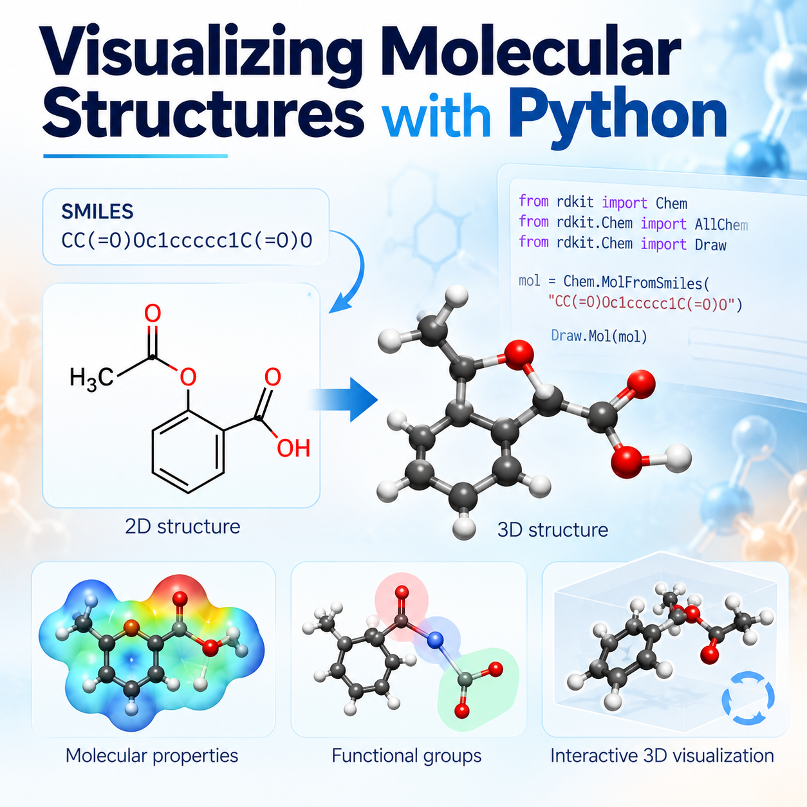
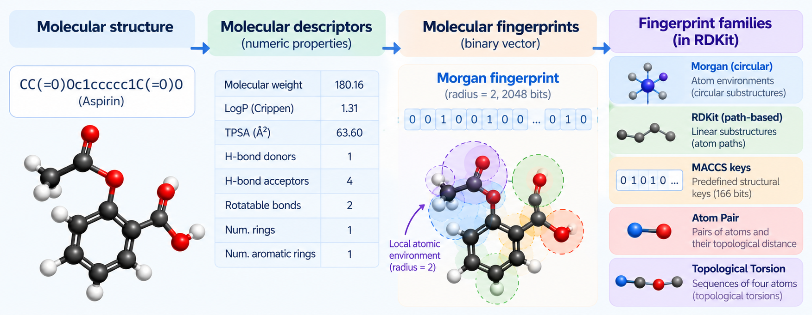
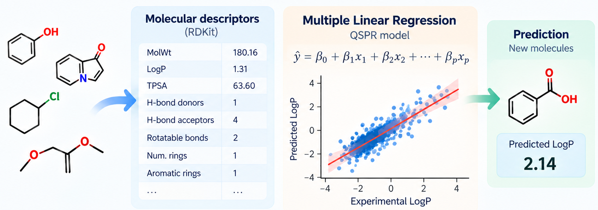
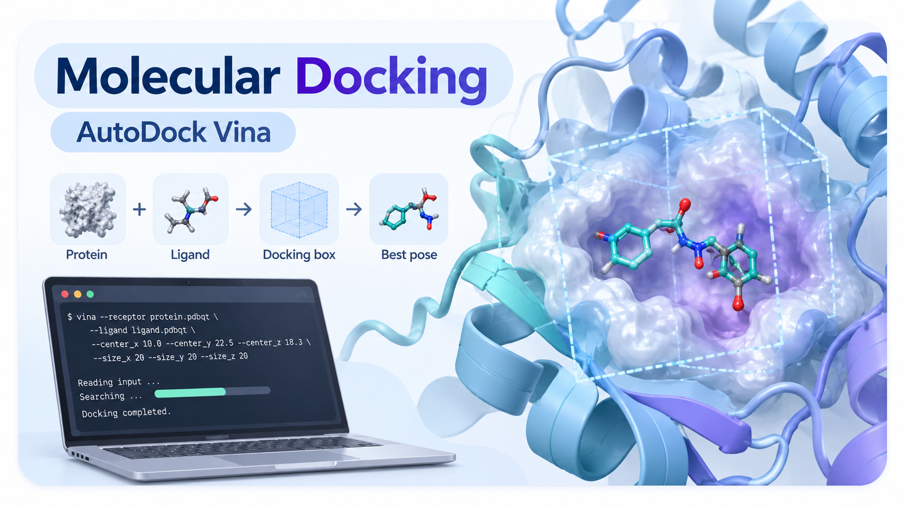
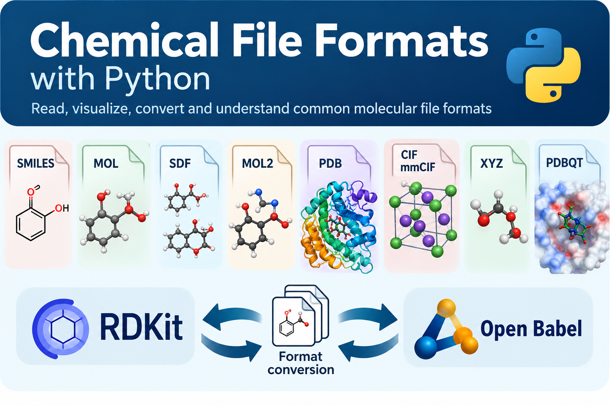

2023 & 2025
Computational Characterization of Materials
Volunteer Teaching Assistant, doctoral course, Coatings and Polymeric Materials program, North Dakota State University. Supported hands-on laboratory sessions.
Teaching
My teaching experience spans general, organic, analytical, bioorganic, and computational materials chemistry across undergraduate and doctoral education.
Volunteer Teaching Assistant, doctoral course, Coatings and Polymeric Materials program, North Dakota State University. Supported hands-on laboratory sessions.
Assistant Professor, Amazonian State University, Ecuador. Delivered lectures and laboratory instruction.
Assistant Professor, PUCESE University, Ecuador. Delivered lectures and laboratory instruction.
Instructor, Central University of Las Villas, Cuba. Delivered lectures and laboratory instruction.
Instructor, University of Ciego de Ávila, Cuba. Delivered lectures and laboratory instruction.
Computational chemistry education
I develop accessible computational activities that help students move from molecular structure and chemical intuition to quantitative descriptors, visualization, data analysis, and predictive modeling. These browser-based Google Colab resources connect chemical concepts with hands-on practice without requiring specialized local software.

Google Colab · Available now
A hands-on notebook introducing Python-based molecular visualization with RDKit, including SMILES, 2D structures, molecular properties, functional groups, and interactive 3D visualization.

Google Colab · Available now
An introductory notebook for generating and exploring molecular descriptors with RDKit, connecting chemical structure with quantitative molecular properties and introducing molecular fingerprint families with a hands-on focus on Morgan fingerprints.

Google Colab · Available now
A step-by-step activity for preparing molecular data, building a multiple linear regression QSPR model, evaluating its predictive performance, exploring descriptor–target relationships, and interpreting the results.

Google Colab · Available now
A hands-on introduction to protein–ligand docking using AutoDock Vina, including search-box definition, docking setup, pose ranking, visualization, score interpretation, and discussion of validation by redocking.

Google Colab · Available now
A practical introduction to common chemistry file formats, including SMILES, MOL, SDF, MOL2, PDB, CIF/mmCIF, XYZ, and PDBQT. Students compare how molecular identity, coordinates, bonding, metadata, and crystallographic unit-cell information are represented and explore format conversion with RDKit and Open Babel.

Google Colab · Available now
A guided classroom workflow for preparing and simulating the c-Abl–imatinib complex in explicit solvent with GROMACS, including topology preparation, solvation, ion addition, energy minimization, NVT and NPT equilibration, short production MD, RMSD, and protein–ligand contact analysis.
I connect chemical fundamentals to realistic data and computational examples, helping students move from concepts to reproducible analysis and scientific interpretation.
I approach mentoring as a progression from chemical reasoning and reproducible computational practice toward increasing independence in data analysis, molecular modeling, scientific communication, and research problem solving.
Cheminformatics, molecular descriptors, QSPR/QSAR, explainable machine learning, polymer informatics, computational toxicology, and Python for chemical data.